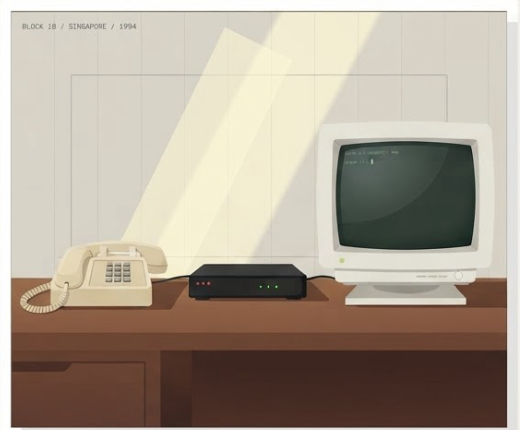

THE FIRST CHANGE
56kbps
DIAL-UP / 1994
56 KBPS1,500 KBPS1 GBPS5G
The line was something you waited beside.
Your photo is ready
Click the button to see how long one photograph took to arrive when the internet was still new.
START HERE: Click “See the photo arrive”.

Compare the years
Choose a connection below to watch the same photo load. Try all four to compare.
ILLUSTRATION Estimated download times for a 64 KB image, calculated from the listed connection speeds. Real download times varied.
The same photo gets quicker to receive over time.
After all four, enter the home where the connection began.
PART TWO / ENTER THE CONNECTED HOME
In 1994, going online was a household event. It took over one room, one phone line and everyone's attention.
HOW TO EXPLORE: Click the objects on the desk.
Going online used the household phone line.

BLOCK 18: SINGAPORE: 1994LOOK AROUND
Three objects tell the story. Start with the telephone.
Source: National Library Board, Infopedia
THE SIGNAL: 1994
The signal travelled from the house to a local exchange, then out to the wider world.
NEXT: Click “Follow the signal” to see where it goes.
The signal is waiting at home.
CHAPTER 03 / THE BROADBAND AWAKENING
First the wait got shorter. Then it disappeared. Soon the connection was simply part of the room.
01 / 03 — SPEED
SCROLL THROUGH: See how the connection spread into daily life.
THE FIRST CHANGE
DIAL-UP / 1994
The line was something you waited beside.
THEN IT SPREAD
The connection moved from a room into everyday life.
Broadband made the internet useful beyond one computer.
LOOK AROUND
The network is no longer a special destination.
Next: see what changed when the internet left the house.
PART FOUR / INTO THE POCKET
The phone was no longer only for calls. Slowly, it became a small window to the world you carried through Singapore.
HOW TO EXPLORE: Open each phone moment.
Mobile internet made information available while travelling.
FIRST, YOU COULD CHECK
On the train, a small screen could show you a headline, a message, or a simple map. It was slow, but it was with you.
THEN, YOU COULD DO
The phone began answering practical questions. You could find a route, book a ride, or check when the next bus would arrive.
FINALLY, YOU COULD STAY
By the time the train reached the next station, the world had not stopped. Music, video, work, and friends travelled with you.
Open a mobile artifact.
0 / 3 openedNext: arrive in the present, where waiting is easy to forget.
PART FIVE / THE PRESENT
That is how completely it has become part of life. It helps us move, work, talk, and find our way without asking us to wait.
LOOK AROUND: Choose an ordinary moment.
The internet is now part of everyday routines.
A DAY IN SINGAPORE
In 1994, getting online was an event. Today, the remarkable thing is how ordinary it feels.
A Singapore internet history / an interactive special report